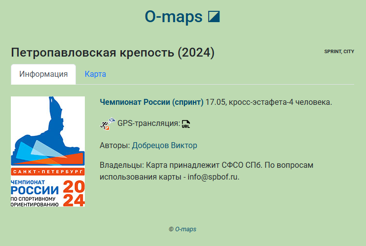
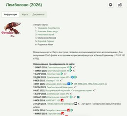
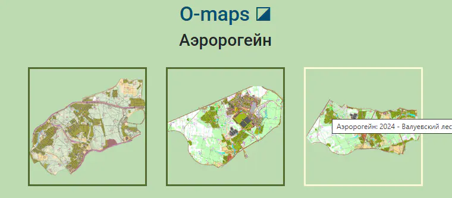
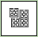

Карточка карты

Всю информацию об отдельно взятой карте можно посмотреть на специальной странице - своеобразной карточке каталога. Например, вот страничка карты ЧР'2024 в Петропавловской крепости: https://o-maps.spb.ru/map-info.html?map=petropavlovka_2024. Заменяя значение параметра map в адресе на имя файла нужной карты, можно получить ссылку на её страничку. Но можно попасть сюда и проще - щёлкнув по скрепке (🔗) справа от названия карты во всплывающем окне с информацией о ней.
Каталог многодневки

Список карт любого соревнования, зарегистрированного в каталоге, можно посмотреть в наглядной форме в виде плиток. Например, по такому адресу откроется страница карт московской серии Аэророгейн. Заменяя значение параметра start в адресе на код нужного соревнования, можно получить ссылку на его страничку. Список всех зарегистрированных стартов и их коды можно посмотреть тут: https://github.com/efradkin/o-maps/blob/main/js/starts.js. Но можно попасть сюда и проще - щёлкнув по специальной кнопке
в правой части заголовка страницы сводной таблицы при включении фильтрации по нужному старту.На странице соревнования две вкладки: «Календарь» - все старты этого соревнования из календаря, и «Карты» - собственно плитки. Щёлкнув по любой из плиток, Вы попадёте на страницу информации о соответствующей карте. Подробнее о соревнованиях - в разделе «Соревнования».